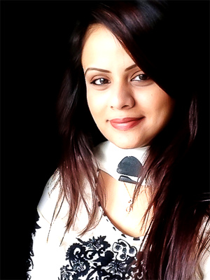

JAFREEN AHMED
Director Fair Trade Group
THE LADY WHO PREFERRED BANGLADESH MORE
People often look at me with envy. When they see 29-year old woman working at her father’s company, they assume that I have got it easy, that my life is made, that I didn’t have to work hard to get to where I am. But that’s just people who don’t know any better. I am where I am because of a vision, a vision that required sacrifice and tremendous courage.
I lived in London for 7 years, where I completed my high school and pursued my academic degree from the London Metropolitan University, majoring in Business Management and Law. After living in England for the duration I did, I really did think about settling there; the reason for doing my major in Law. I even worked for various volunteering projects to boost my chance of employment.
But my father insisted that I come back to Bangladesh, to take charge of his legacy at some point. I had done everything to build up a successful career in England, but that would mean I had to turn away my father. I would be lying if I say that the thought never crossed my mind, but I couldn’t do that, not to my father, not to his dreams about me.
In reality, it would be foolish not to care about the legacy of my family, not to carry it forward. That’s how great empires are built, when successive generations carry forward the success of the preceding generations. And the empire my father has built is a pretty impressive one. It would not be fair to continue without getting into the details of the empire just a little bit.

Fair Trade Group is one of the largest woven composite function industries in Bangladesh, with a complete vertical set-up for vast production capacity. It is a 100% export oriented industry with state-of-the-art technology to cater to the demand of high quality products and services by its valued customers throughout Europe, USA, South America and Canada.
All the factories are within one boundary, 100% compliant in all aspect with International Standards, boasting state-of-the-art machineries, operated by a workforce trained abroad. The huge compound is located 40 km away from Dhaka at Shafipur of Gazipur district, covering an area of approximately 16.5 acres of land, manufacturing and producing woven fabrics, apparels, garment dyeing, denim washing, yarn dyeing and processing including zippers (metal, vislon and nylon), snap buttons, woven tape and elastic.
Naturally, my father wanted me back to learn about the empire he created, so that I can lead someday. So I came back, and the first project my father handed to me was FairZipper and Yarn Dying Mills. Compared to what my father was running, this project was tiny, but to my inexperienced, excited mind, this was herculean in nature.
It didn’t take me long enough to understand that this was a male-dominated industry. I knew that before, but to face it daily, on every level, takes a lot of patience and courage. I knew that I wasn’t going to win any friends by working superficially, under the shadow of my father. I could only win if I got my hands dirty. In fact, the only way to learn was to get my hands dirty.
I engrossed myself in learning the nooks of the trade, learning through experience and mistakes, and advice from experts, such as my father. He was the one who taught me the essentials of the industry, like how to acquire machineries from abroad, how to choose the right suppliers and negotiate with them, how to manage people under me, how to deal with the thousand and one problems of everyday administration, how to deal with politics, how to identify the loop holes. The list is endless, and so is my gratitude.
It wasn’t long before I acquired my first mould cutting machineries, reducing my operational cost in the long run. After that, I was given the charge of running Fair Packaging Limited. My father was expanding in the declining economy, opening up factories to control more of the backward linkage, to try and reduce the dependency on others and bringing a rein in on the entire operation. And in the expansion, my father was depending on me to carry on the charge.
Now, my father is not someone who is dependent on people. He had his entire operation under his grasp, and he doesn’t allow mistakes. Mishandled decision can lead to a major uprising among the labors or cause a disruption in the production line, situations which are highly detrimental to our operation which is 100% export-based, and everything boils down to deadlines. And because so much was riding on the smoothness of our operations, my father never allowed any mistake, even in me. I am his daughter at home, not at office. It was his ruthlessness in not allowing his emotions get in the way of teaching me that made me who I am now.
At the office, I often have to scream, and shout, and be someone I am not. But what makes it all worthwhile is my desire to be the best at my field. I recently became a member of BWCCI, in order to realize one of my goals in helping out underprivileged women entrepreneurs. And in about 10 years, I want to be known as the foremost figure of the Bangladeshi garments industry.
Now, I am known as one of the most successful young entrepreneur of Bangladesh. But that was not what I was striving to do. I was striving to build up my father’s dream. I had to let go of countless dreams of my own, but I don’t regret it. The right reasons brought me here. And I believe the right reasons will carry me forward. I am honored to have been thought of as the most one of the most successful young entrepreneur of Bangladesh, but underlying all that, is a vision I share with my father.